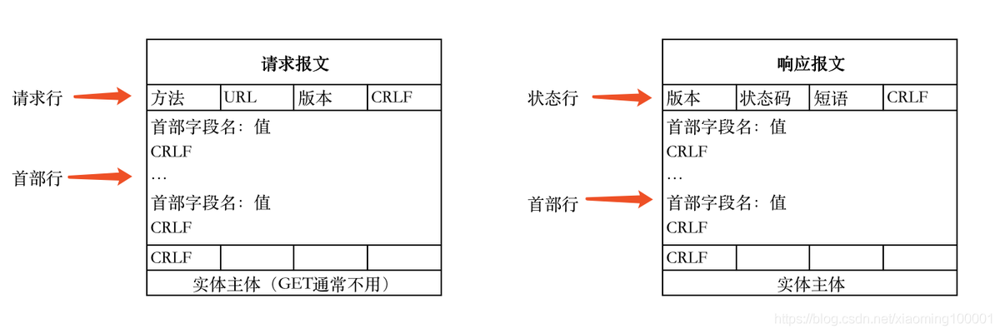

HTTP和HTTPS
什么是HTTP
- 超文本传输协议，是一个基于请求与响应，无状态的，应用层的协议，常基于TCP/IP协议传输数据，互联网上应用最为广泛的一种网络协议,所有的WWW文件都必须遵守这个标准。设计HTTP的初衷是为了提供一种发布和接收HTML页面的方法。
HTTP/1.1和HTTP/2的主要区别
- 多路复用：通过单一的HTTP/2连接请求发起多重的请求-响应消息，多个请求stream共享一个TCP连接，实现多留并行而不是依赖建立多个TCP连接。HTTP/2性能占优势。

HTTP的报文格式

什么是HTTPS
- 《图解HTTP》这本书中曾提过HTTPS是身披SSL外壳的HTTP。HTTPS是一种通过计算机网络进行安全通信的传输协议，经由HTTP进行通信，利用SSL/TLS建立全信道，加密数据包。HTTPS使用的主要目的是提供对网站服务器的身份认证，同时保护交换数据的隐私与完整性。
PS:TLS是传输层加密协议，前身是SSL协议，由网景公司1995年发布，有时候两者不区分。
HTTP和HTTPS的优缺点
HTTP特点：HTTP协议传输数据以明文形式显示
- 无状态：协议对客户端没有状态存储，对事物处理没有“记忆”能力，比如访问一个网站需要反复进行登录操作
- 无连接：HTTP/1.1之前，由于无状态特点，每次请求需要通过TCP三次握手四次挥手，和服务器重新建立连接。比如某个客户机在短时间多次请求同一个资源，服务器并不能区别是否已经响应过用户的请求，所以每次需要重新响应请求，需要耗费不必要的时间和流量。
- 基于请求和响应：基本的特性，由客户端发起请求，服务端响应
- 简单快速、灵活
- 通信使用明文、请求和响应不会对通信方进行确认、无法保护数据的完整性
HTTPS特点：数据非明文传输
基于HTTP协议，通过SSL或TLS提供加密处理数据、验证对方身份以及数据完整性保护
内容加密：采用混合加密技术，中间者无法直接查看明文内容
- 混合加密：结合非对称加密和对称加密技术。客户端使用对称加密生成密钥对传输数据进行加密，然后使用非对称加密的公钥再对秘钥进行加密，所以网络上传输的数据是被秘钥加密的密文和用公钥加密后的秘密秘钥，因此即使被黑客截取，由于没有私钥，无法获取到加密明文的秘钥，便无法获取到明文数据。
- 数字摘要：通过单向hash函数对原文进行哈希，将需加密的明文“摘要”成一串固定长度(如128bit)的密文，不同的明文摘要成的密文其结果总是不相同，同样的明文其摘要必定一致，并且即使知道了摘要也不能反推出明文。
- 数字签名技术：数字签名建立在公钥加密体制基础上，是公钥加密技术的另一类应用。它把公钥加密技术和数字摘要结合起来，形成了实用的数字签名技术。
验证身份：通过证书认证客户端访问的是自己的服务器
- 收方能够证实发送方的真实身份；
保护数据完整性：防止传输的内容被中间人冒充或者篡改
- 发送方事后不能否认所发送过的报文；
- 收方或非法者不能伪造、篡改报文。

使用非对称加密
非对称加密过程需要用到公钥进行加密，那么公钥从何而来？其实公钥就被包含在数字证书中，数字证书通常来说是由受信任的数字证书颁发机构CA，在验证服务器身份后颁发，证书中包含了一个密钥对（公钥和私钥）和所有者识别信息。数字证书被放到服务端，具有服务器身份验证和数据传输加密功能。

客户端输入URL回车，DNS解析域名得到服务器的IP地址，服务器在80端口监听客户端请求，端口通过TCP/IP协议（可以通过Socket实现）建立连接。HTTP属于TCP/IP模型中的运用层协议，所以通信的过程其实是对应数据的入栈和出栈。

HTTPS运行流程
- client向server发送请求https://baidu.com，然后连接到server的443端口，发送的信息主要是随机值1和客户端支持的加密算法。
- server接收到信息之后给予client响应握手信息，包括随机值2和匹配好的协商加密算法，这个加密算法一定是client发送给server加密算法的子集。
- 随即server给client发送第二个响应报文是数字证书。服务端必须要有一套数字证书，可以自己制作，也可以向组织申请。区别就是自己颁发的证书需要客户端验证通过，才可以继续访问，而使用受信任的公司申请的证书则不会弹出提示页面，这套证书其实就是一对公钥和私钥。传送证书，这个证书其实就是公钥，只是包含了很多信息，如证书的颁发机构，过期时间、服务端的公钥，第三方证书认证机构(CA)的签名，服务端的域名信息等内容。
- 客户端解析证书，这部分工作是由客户端的TLS来完成的，首先会验证公钥是否有效，比如颁发机构，过期时间等等，如果发现异常，则会弹出一个警告框，提示证书存在问题。如果证书没有问题，那么就生成一个随即值（预主秘钥）。
- 客户端认证证书通过之后，接下来是通过随机值1、随机值2和预主秘钥组装会话秘钥。然后通过证书的公钥加密会话秘钥。
- 传送加密信息，这部分传送的是用证书加密后的会话秘钥，目的就是让服务端使用秘钥解密得到随机值1、随机值2和预主秘钥。
- 服务端解密得到随机值1、随机值2和预主秘钥，然后组装会话秘钥，跟客户端会话秘钥相同。
- 客户端通过会话秘钥加密一条消息发送给服务端，主要验证服务端是否正常接受客户端加密的消息。
- 同样服务端也会通过会话秘钥加密一条消息回传给客户端，如果客户端能够正常接受的话表明SSL层连接建立完成了。
总结
- HTTPS从安全性上比HTTP要安全，理论上只要SSL证书体系安全，HTTPS是安全的，但是SSL证书的信用链体系并不安全
- HTTPS连接缓存不如HTTP高效，服务器端资源占用高与HTTP，流量成本高。所以基于安全因素，譬如外网选择HTTPS是一定的，但是如果是内网传输则HTTP是优选。